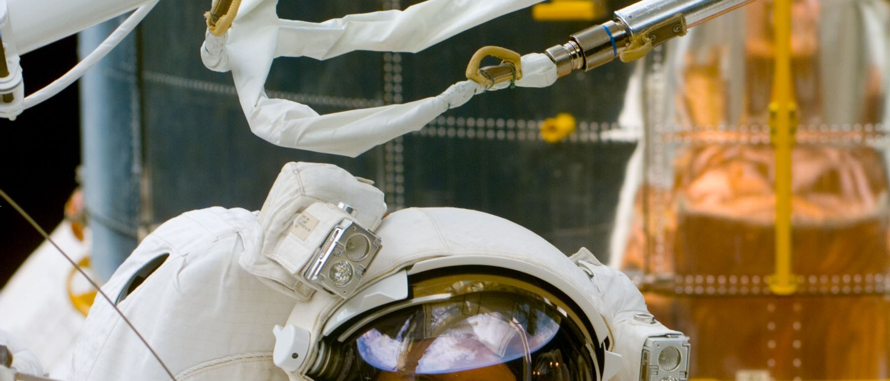
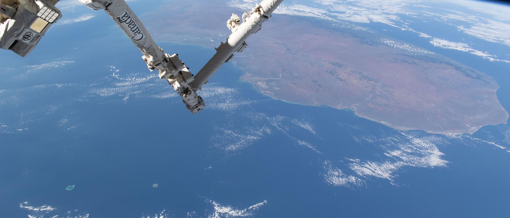

研究方向Research
巨型星座分层分簇管理
面向万颗级星座规模扩大带来的运维与星间通信开销问题，研究簇首选举与多目标簇划分、条件-行动动态分簇，以及大规模星座的构型设计与运行调度。
IEEE TAES 2025, 61(4): 10098–10109
巨型星座协同式构型维持
面向 J2 与大气阻力摄动下的长期运行，解决相位漂移与碰撞风险问题，研究双层相位优化、被动安全约束下的构型重构与万星级分层协调。
IEEE TAES 2025, 61(6): 16738–16750 · IEEE TAES 2026, 62: 15269–15282

单目航天器跨域位姿估计
面向非合作目标的交会、巡检与在轨服务，解决跨域图像分布差异导致位姿精度下降的问题，研究无监督域适应、关键点—深度联合估计与几何约束下的位姿求解。
应用 · 非合作目标交会、巡检与在轨服务

Other Topics 航天器集群协同与容错控制 · 空间机器人与在轨服务 · 无人系统规划决策 · 嵌入式系统与 AI 应用 · 新能源系统控制与优化
部分论文Selected Papers
全部论文 »- Observer-Based Finite-Time Control of Crewed Submersible Vehicle Against Multiple UncertaintiesIEEE Transactions on Intelligent Vehicles 2026
- Enhancing Attitude Tracking with Self-learning Control using Tanh-type Learning IntensityIEEE Transactions on Automation Science and Engineering 2025
- Clustering Strategy for Megaconstellation with Synergistic Energy and Size ConsiderationsIEEE Transactions on Aerospace and Electronic Systems 2025
- Configuration Maintenance in Multi-Satellite OrbitsIEEE Transactions on Aerospace and Electronic Systems 2025
- sQPEP: Global Optimal Solutions to Scaled Quadratic Pose Estimation ProblemsIEEE Transactions on Instrumentation and Measurement 2025
- Factor Graph Optimization for GNSS/INS IntegrationIEEE Transactions on Industrial Informatics 2024
Aerospace Science and Technology / Aerospace Systems 系列（18 篇）
- Passive Safety Maintenance for Long-Term Spacecraft Cluster Flying Utilizing Relative Motion Perturbed Evolution LawAerospace Science and Technology 2025
- Learning Chebyshev Neural Network-based Spacecraft Attitude Tracking Control Ensuring Finite-time Prescribed PerformanceAerospace Science and Technology 2024
- Neural-Networks and Event-Based Fault-Tolerant Control for Spacecraft Attitude StabilizationAerospace Science and Technology 2021
- Sampled-Data Self-Learning Observer based Attitude Tracking Control Against Sensor-Actuator FaultsAerospace Systems 2025
科研项目Projects
- 基于自学习策略的轻量化航天器姿态容错控制研究国家自然科学基金 · 面上项目 · 负责人 · 2026.01 – 2029.12
- 事件通信方式下多航天器姿态协同控制研究国家自然科学基金 · 青年项目 · 负责人 · 2021.01 – 2022.12
- 柔性 OLED 驱动电路封装机关键技术研发深圳市技术攻关重点项目 重2021N007 · 子课题负责人 · 2021.07 – 2024.07
- 性能可调事件方式的姿态控制研究中央高校基本科研业务费（江南大学）· 负责人 · 2023
- 智能位姿估计视觉算法分析与评估横向课题 · 负责人 · 2026
- 星地协同巨型星座分布式自主导航与一致性协调轨道控制软件测试横向课题 · 负责人 · 2024
另主持液压伺服控制系统、大用户水管线路漏损系统等横向课题；参与国家重点研发计划「面向集群 / 巨型星座应用的卫星平台技术」子课题、国家自然科学基金优青项目、深圳科技计划基础研究学科布局项目等。申请及授权专利 5 项（含国防专利 3 项）。主编英文专著《Recent Progress in Robot Control Systems: Theory and Applications》（MDPI, 2024）。
荣誉与学术兼职Honors & Academic Service
荣誉
- 2026IEEE Senior Member（高级会员）
- 2023 – 2026斯坦福大学—爱思唯尔 全球前 2% 科学家（连续四年）
- 2024江苏省人才项目（双创博士）
- 2026江南大学物联网学院优秀研究生导师
- 2025Intelligence & Robotics 2024 Best Reviewer Award
- 2021首届哈尔滨工业大学（深圳）优秀博士后（全校 15 名）
学会与评审
- IEEE SMC 南京分部 · 秘书
- 中国自动化学会青年工作委员会 · 委员（2025–）
- 国家自然科学基金 · 通信评议专家
- 《中国科学基金》· 审稿人
- 深圳市科技创新委员会 · 评审专家
- AppliedMath Travel Award · Award Committee（2026）
期刊任职
- Aerospace Engineering Communications · 主编 Editor-in-Chief（Co-EiC Jin Wu, 2025–）
- Aerospace Systems（上海交通大学出版）· 编委
- Scientific Reports（2025–）/ Symmetry（2025–）· 编委
- Astrodynamics（清华大学 / Springer）· 青年编委（2024–）
- Frontiers in Aerospace Engineering（2022–）/ Frontiers in Mechanical Engineering（2025–）· Associate Editor（副编辑）
- AppliedMath / IoT / POLYMAS CS&S · 编委
会议组织
- ICGNC 2026 · 专题共同主席（与吴荩、贺威；Multi-Agent Collaboration for Autonomous Mapping and Navigation）
- YAC 2025 · 专题 Co-chair（与吴荩、姜艺；机器人导航、定位、建图新进展）
- CCDC 2024 · Invited Session Chair（董瀚林邀请）；FASTA 2024 / 2025 · 程序委员会
- IEEE GEM 2024、IEEE ICCC'24 · TPC；ACA 2025 · TPC（刘瑞霞邀请）
教学与团队Teaching & Team
授课
获奖与班主任
- 校优秀本科毕业设计指导教师：栗森茂（2024）、席伟杰（2026）
- 十五届、十六届蓝桥杯全国软件比赛优秀指导教师
- 2026 年度学院青年教师教学竞赛三等奖
- 2023 级本科生班主任
课题组 · Orbital Systems Lab
博士生
(26) 夏睿
硕士生
(22级) 陆伟佳* 发表 MFC、AEAT、TASE
(23级) 卢瑞秋 发表 飞控与探测、2025YAC会议、ASST、IEICE
(23级) 尹天乐 发表 5 篇论文，3 篇 IEEE-TAES，中山大学读博
(24级) 翟峰（1EI，1SCI 在审）、杨努（1SCI，1SCI 在审）、张瑞芹（1EI，1SCI 在审）
(25级) 乔正（1EI，2SCI 在审）、徐士杰（1SCI 在审）、张盼（1SCI 在审）、鲁蓝灵（1SCI 在审）、卢兴海
(26级) 余一聪、马友鹏、刘文乐、李昂、吴岱霖
近三年所带本科生
王昊（现大二，SCI 论文准备投稿）
刘安琪 保研（直博）上海交通大学
吴昊 保研（直博）浙江大学（发表 1 篇，投稿 SCI 1 篇）
侯晨杨 保研（直博）西安交通大学
栗森茂 保研（直博）同济大学（发表 EI）
胡宸恺 保研（直博）浙江大学
沈天奥 读研 香港中文大学（发表 SCI）
席伟杰 保研（直博）上海交通大学（发表 SCI）
祝伟铭 考研 南京大学
招生方向：控制科学与工程（0811）、电子信息 / 控制工程（085406），欢迎交叉学科背景的同学。